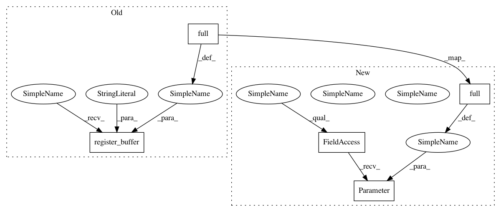

87dac30ee939178a00f908c7aae63960f0a4c988,ch07/lib/dqn_model.py,NoisyLinear,__init__,#NoisyLinear#,10
Before Change
class NoisyLinear(nn.Linear):
def __init__(self, in_features, out_features, sigma_init=0.017, bias=True):
super(NoisyLinear, self).__init__(in_features, out_features, bias=bias)
self.register_buffer("sigma_weight", torch.full((out_features, in_features), sigma_init))
self.register_buffer("epsilon_weight", torch.zeros(out_features, in_features))
if bias:
self.register_buffer("sigma_bias", torch.full((out_features,), sigma_init))
self.register_buffer("epsilon_bias", torch.zeros(out_features))
After Change
class NoisyLinear(nn.Linear):
def __init__(self, in_features, out_features, sigma_init=0.017, bias=True):
super(NoisyLinear, self).__init__(in_features, out_features, bias=bias)
self.sigma_weight = nn.Parameter(torch.full((out_features, in_features), sigma_init))
self.register_buffer("epsilon_weight", torch.zeros(out_features, in_features))
if bias:
self.sigma_bias = nn.Parameter(torch.full((out_features,), sigma_init))
self.register_buffer("epsilon_bias", torch.zeros(out_features))
In pattern: SUPERPATTERN
Frequency: 4
Non-data size: 5
Instances
Project Name: PacktPublishing/Deep-Reinforcement-Learning-Hands-On
Commit Name: 87dac30ee939178a00f908c7aae63960f0a4c988
Time: 2018-05-06
Author: max.lapan@gmail.com
File Name: ch07/lib/dqn_model.py
Class Name: NoisyLinear
Method Name: __init__
Project Name: PacktPublishing/Deep-Reinforcement-Learning-Hands-On
Commit Name: 87dac30ee939178a00f908c7aae63960f0a4c988
Time: 2018-05-06
Author: max.lapan@gmail.com
File Name: ch07/lib/dqn_model.py
Class Name: NoisyFactorizedLinear
Method Name: __init__